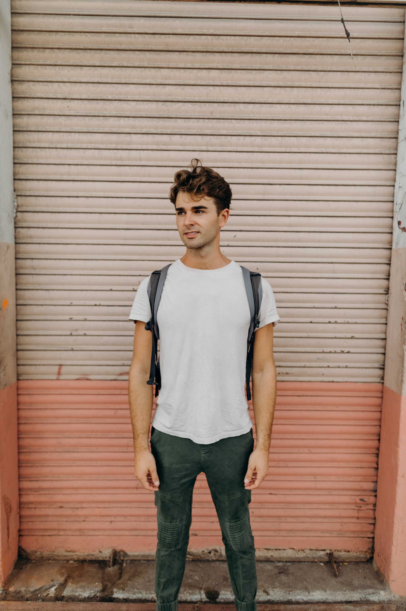

Shawn Fortune
www.shawnfortune.social

Education
- University of Miami, 2019- Present
- Major in Electronic Media, Minors in Music Business & Entertainment Industries, Spanish
- School of Communications Deans List, Fall 2019
- Johns Creek High School 2014-2018
- 3.86 GPA
Experience
- Freelance Photographer and Videographer, 2016- Present
- Coordinate and execute content strategies
- Set prices, discuss quotes with clients, manage invoices
- Manage Instagram accounts for events in real time
- Worked with 19 unqiue clients in 2019
- Student Market Manager, Neato Agency x Vans, 2019
- Selected to be one of 18 national SMMs
- Plan events that promote the DIY, Van Doren Spirit
- Maintain weekly social media psots for the brand
- Social Media Strategist, Orange Umbrella Miami, 2019
- Planned social media posts for clients looking for digital work
- Movie Extra, 2018- Present
- Apply via casting calls, send photos to the casting directors
- Attend fittings, work with directors to act in the appropriate placement
- Worked with After and Stranger Things (2019), Impractical Jokers Movie and Stargirl (2020)
Hobbies
- Traveling
- Surfing
- Outdoors
- Learning Spanish
- Skating
- Other hobbies
About Me
I am Shawn. I am from Atlanta, GA. I came to the University of Miami because I wanted to be near the beach and I didn't think I'd get into this school. I am studying Electronic Media and minoring in Music Business & Entertainment Industries,
as well as Spanish. In 2019 I worked with 19 individual clients doing photgraphy and videography. I spend a lot of weekends traveling to different cities for shoots. Outside of working, I enjoy being a travel of my own city and exploring new
places to hang out where I live.